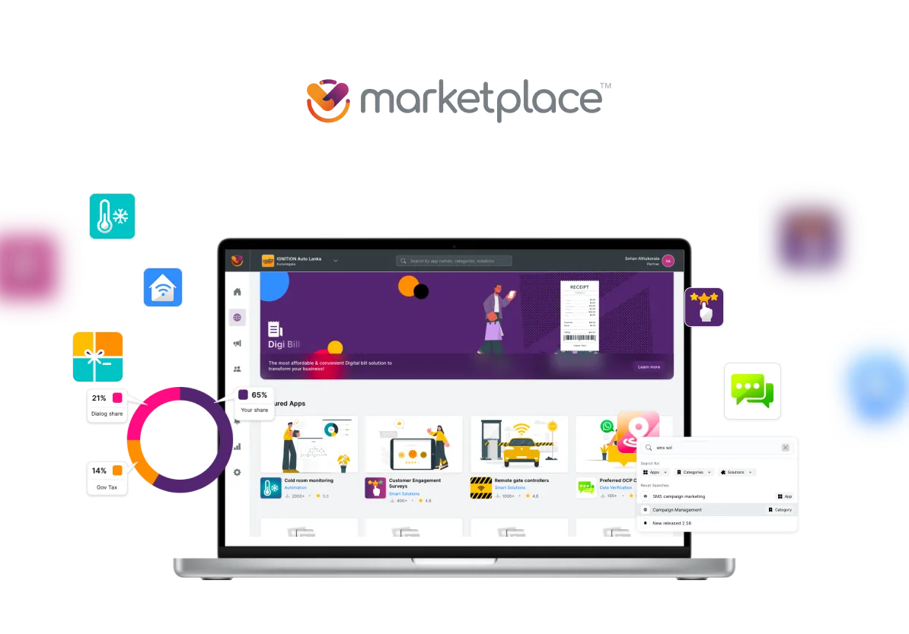
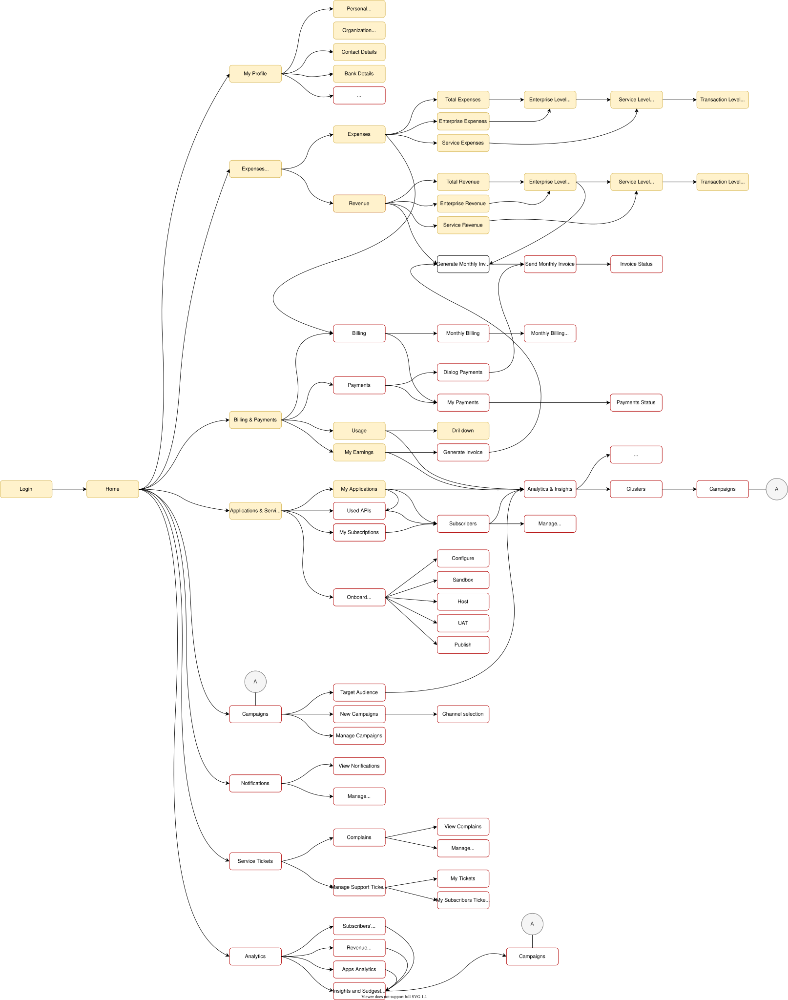

Catalog Scale
Corner shop
to enterprise.
- 25Categories
- ~100Widgets
- 4User Roles
- 1Open Catalog
One-stop digital business solutions marketplace
Dialog Enterprise Marketplace is a unified digital platform that enables Sri Lankan enterprises to discover, configure, and adopt a broad suite of enterprise-grade software and digital tools with minimal complexity. Instead of dealing with multiple vendors, businesses can access cloud services, campaign tools, customer-engagement systems, analytics, and workflow automation - all through a self-serve, click-to-deploy marketplace experience.
The Marketplace is built around simplicity and accessibility, enabling organisations of all sizes - Small & Medium Enterprises (SMEs), mid-market, and larger corporations - to digitally transform operations without heavy technical lift or custom coding
Sri Lanka’s enterprise landscape was moving rapidly toward digital adoption, yet many businesses struggled with fragmentation: disparate software contracts, multiple sign-ups, and inconsistent billing.
Enterprises lacked a central hub for procuring digital tools with local support and simplified ICT management. Dialog Enterprise Marketplace was conceived to centralise this journey, turning digital transformation from a complex procurement process into a self-configurable, unified experience..
Catalog Scale
Voice & Comms
Payments
Telco Shopify
Security & ID
Analytics & IoT
How it Works


Dialog Enterprise Marketplace is the largest public-facing enterprise SaaS product shipped by the Ideamart engineering team at Dialog Axiata. The core idea, in one line: a Shopify for telco-grade enterprise tools. Pick the solution you need, configure it, pay, and it is live, with no developer, no sales engineer, no procurement cycle.
The public marketing site frames it as "a one-stop-shop digital platform with a wide range of easy-to-use, click-and-go type widgets-based enterprise solutions", with three promises on the wall: Zero Complexity, no coding knowledge is needed, a self-service model, and affordability through single-provider billing. The job of the design work below was to make those three promises true at every step of the actual product.
It started in early 2020 as an internal pilot beside the existing Ideamart API and Ideabiz developer platforms. Those products served code-literate buyers well. This one had to serve everyone else.
The Beta went live quietly. Within weeks, marketing, existing Ideamart customers, and Ideabiz business users were pitching it inside their own networks. We had not planned for the attention. Rather than retreat, we kept the Beta live as a research instrument and formed a parallel team to rebuild from scratch as Marketplace 2.0, codename Polaris.
By September 2023 the catalog spanned 25 categories and roughly 100 widgets, from corporate voice and digital payments to IoT, security, surveys, location intelligence, and enterprise analytics. The buyer might be a corner shop or a multi-branch enterprise. Designing one discovery surface that worked for both was the central UX problem.

Widget catalog snapshot, September 2023. 25 categories, nearly 100 enterprise solutions to surface inside one self-serve experience.
The work below maps to an end-to-end design process that I owned across multiple years:
I was the only UX person on this product. Over the lifespan of the project that role kept widening, because the gaps I saw kept demanding it.
I joined as the UX designer. I owned research, information architecture, user flows, wireframes, and high-fidelity screens for the full product. Every flow you can see on the live portal, I sketched, mapped, and designed.
Designs kept losing detail on the way to React. So I stopped handing off and started shipping. I built the entire UI layer of Polaris in HTML and CSS, component by component, exactly to my own specs. The React team consumed my markup as the source of truth instead of trying to interpret a Sketch file. What I designed is what got built, because I was the one building it.
The original Beta had no UX owner and a fragmented product direction. When the rebuild started, I wrote the roadmap, defined the four user types, scoped the public catalog cut, set the saved-resumable KYC as a non-negotiable, and stayed in the room for every prioritisation call. I was not the product manager, but on every decision that touched user experience, I owned the position.
Marketplace became the first product to ship on a custom, in-house design system I built for the Ideamart organisation. The framework, tokens, components, layout primitives, and interaction patterns, did not exist before. Every previous Ideamart product had reinvented its own UI from scratch. Marketplace was the moment the org stopped doing that.
I was in the room from the first brainstorm and stayed in the room through every phase that followed. That meant pitching the original concept internally, then re-pitching the Polaris vision to the XL Axiata team in Indonesia when the sister deployment was on the table. Day to day, I drove the product sprints alongside the Product Manager and the Project Manager, kept the development team aligned with the build vision, and stayed close to the Product Owner so the satisfaction loop on every release was visible. The job was never just "design and hand off". It was making sure design, engineering, and product strategy stayed in sync at every layer.
The Ideamart API and Ideabiz developer platforms served code-literate buyers well. The pilot tested whether the same enterprise tooling could be wrapped in a self-serve surface for buyers who had never seen a webhook.
The internal pitch landed instantly. Rather than shelve an unfinished product, we published it as a Beta. The bet: every real user who hit a wall would point us to a constraint we had not seen. The Beta became our biggest user interview, conducted live, in production, at zero research cost.
The earliest artifacts of this product are wireframes I drew when the brand was still "Ideabiz Enterprise Solutions", before the Marketplace name existed. The Shopify-like idea is already visible: categorised solutions, a dashboard that tracks what is active and what is expiring, a checkout that aggregates a cart of services across multiple Dialog payment rails. The vocabulary changed. The shape did not.

Dashboard wireframe, 2020. Services Purchased, expiring services, monthly usage, and a grid of activated widgets. The dashboard primitives that ship in Polaris today were drawn here.

Catalog homepage wireframe. Security, Education, Weather, My Apps, Smart Employee Engagements, Customer Engagement, Payments, City Analytics, Transportation. Category-grouped, Shopify-style, before the catalog name existed.

Checkout wireframe. Cart with multiple services, each priced by subscription tier, settled through Genie, eZcash, Click2Pay, Add to Bill, or card. The payment-rail flexibility that Polaris ships today was scoped here.

Marketing agent flow, 2020. Sign Up to Configurations to Admin Approval to a revenue dashboard showing portion of monthly income per onboarded enterprise. This is the seed of the Polaris Partner program.
The discovery work happened in three streams running in parallel: qualitative feedback from the live Beta, a hard look at the catalog scale problem, and a structural audit of the inherited onboarding flow that I had not designed.
Once the Beta was live, the feedback was almost universal in shape: people appreciated the effort and the ambition, then quickly hit a wall. The walls were almost always in the same places. Onboarding was too long for the value being offered. The decision of what type of user someone was got made before they understood the choices. The catalog itself was hidden behind sign-up, KYC, and manual approval, so prospects who wanted to evaluate fit could not even see what was on offer.
This was the signal that justified the rebuild. The product was solving a real problem, the surface that wrapped it was not.
Roughly 100 widgets across 25 categories is a lot of surface area to expose to a non-technical buyer. The Beta tried to surface everything as a flat grid once you got inside, with no progressive disclosure, no comparison helpers, and no contextual recommendation. The information architecture needed to start over with the buyer in mind, not the product taxonomy.
The Beta onboarding flow had been built as a prototype, without UX involvement. Once I was given the mandate to lead the rebuild, I documented the inherited flow in full so the team had a shared reference for what we were redesigning away from.

Beta login. The product opens with a credential prompt before any value is shown.

Beta sign-up. Six required fields, mobile number validation tied to Dialog NIC or BRC, CAPTCHA, all before the catalog is visible.

Profile type selection. Four roles, an irreversible choice, made before the user has seen any catalog content that would inform the decision.

Post-signup landing. The product still hides the catalog and asks the user to create an enterprise record first.

Enterprise creation form. Address, business description, NIC number, NIC copy upload, document type, owner identity. All required upfront, with no preview of what the user is unlocking.

Agreement gate. Two checkboxes, dense legal copy, the final wall before submission.

Pending approval. The user has spent fifteen minutes on forms, and is now told to wait for a human to review them, with no catalog access in the meantime.

Mobile verification modal, popped on top of the agreement gate. Another mandatory step, layered on top of an already-mandatory step, with no progress saved if the user drops off.

Reports navigation in the Beta. Functional skeleton, no operational warmth, and accessible only after the gate is cleared.

Post-approval portfolio. The user can finally enter the catalog, several days after first arrival.
The Beta authenticated every visitor through Keycloak. The only way to check whether a person already had an account was to attempt a login, which forced anyone curious about the product into a credential prompt as their first experience. Combined with mandatory KYC and manual approval, this meant the heaviest gate in the product, identity verification, sat in front of the lightest activity in the product, browsing the catalog. The redesign had to invert that relationship without losing the compliance, billing, and partner-attribution guarantees that Keycloak was already providing.
Marketplace 2.0 had to serve four distinct user types, each with a different reason for being on the platform, a different permission surface, and a different journey. Designing one flow for all four was the trap the Beta fell into. Designing four journeys that converged on a shared catalog was the way out.
Before any screens were sketched, I mapped the partner portal journey end to end, including which screens each role could see, which actions each role could take, and where the journeys diverged versus shared a screen. The map became the single source of truth for the rebuild team, and it caught permission edge cases that would otherwise have surfaced only in QA.

Partner portal journey map. Yellow nodes are shared shell screens, red nodes are role-scoped views. The same map drove the role permission matrix and the route table the React team consumed.
The most consequential change was structural. The marketing site, the category browse, and the individual widget detail pages all moved in front of authentication. A first-time visitor can land on the homepage, follow a link to a specific app, and read what it does, what it costs, and how it integrates, without ever signing up. KYC and approval still gate the act of subscribing, but they no longer gate the act of looking.
Rather than refactor the Beta in place, we ran two products in parallel. The Beta kept serving its growing audience and kept producing feedback. A separate team, with me leading UX end to end, built Marketplace 2.0 from a clean foundation. That decision protected the live users from churn, protected the rebuild from being constrained by Beta scaffolding, and let us cut over only when the new product was demonstrably better on every flow we cared about.
The live portal is at marketplaceportalbeta.dialog.lk, the consumer marketing site is at marketplace.dialog.lk, and the corporate placement sits at business.dialog.lk. The walkthrough below covers the flows that resolved the Beta's biggest UX failures.
The Polaris homepage is a public marketing surface, not a login wall. Anyone can read the value proposition, follow the Products menu into a category, and open a specific widget detail page. The Beta's first impression was a credential prompt. Polaris's first impression is the product itself.
Polaris public landing. Marketing, navigation, and direct CTAs sit in front of the auth wall, where the Beta's credential prompt used to be.

Single app detail, viewed while signed out. Pricing, features, similar apps, and support links are all available before any account exists.
Even in 2023, we shipped a native AI match score on every widget detail page. The score reflects how well the widget fits the visitor's business profile based on the categories they have explored, the apps they have viewed, and the inputs they have already given the platform. It was the first native AI-driven recommendation surface on a Dialog Enterprise product.

Native AI match score on a widget detail page, shipped in 2023. The modal explains how the percentage is calculated, so the recommendation stays legible rather than opaque.
The single largest behavioural change between Beta and Polaris is here. KYC stopped being a one-shot form gauntlet and became a four-step Build-your-Organization wizard with a progress bar, independent steps, and a save state on every input. A user can complete the four steps in any order, leave halfway through, return days later, and pick up exactly where they left off. The product never asks them to start over.
The four steps are Your Profile, Account Type, Business Profile, and Terms and Conditions. Each step is independently completable, independently saveable, and shows a clear status on the parent screen. Sign-in is offered inline on the very first step for users who already have an account, so the "am I new or returning" ambiguity that the Beta forced into the login form is resolved here instead.
Counting screens to get from "new visitor" to "able to use the product":
Same compliance outcome, very different path through it.

Build your Organization at 0 percent. Four steps, all pending, completable in any order. The progress bar at the top is the visible save state.

Your Profile, mid-flow. Inline mobile OTP verification, password rules, and an "Already have an account? Sign in" cross-link on the same screen, removing the Beta's login-versus-signup ambiguity.

Account Type, presented as a step inside the build flow rather than a blocking modal. Three role cards, with explanatory copy and role-specific responsibilities under each.

Business Profile, with a "Saved" badge on the step header while the form is still being edited. The user can leave at any point without losing input.
Approval still exists. Owner identity, business legitimacy, and partner payouts demand a human review step, and removing that was never on the table. What changed is how the waiting period is communicated. The Beta dropped users into an opaque "pending" screen with no expectation set. Polaris commits to a 1 to 12 hour SLA, surfaces the completed steps the user just submitted, and explains the next handoff in plain language. When approval lands, the same screen flips to an "Approved" celebratory state with a direct CTA into Discover.

Approval Pending. The product names the 1 to 12 hour SLA, lists the four completed steps as evidence of progress, and avoids the "blank waiting room" tone of the Beta.

Approved. The pending state flips in place to a celebratory confirmation with a one-tap path into Discover.
Post-approval, the user lands on a portal home that frames Marketplace as an operational surface rather than a one-time purchase. Month-to-date spend, active apps, average app cost, what is new in the marketplace, and onboarding videos all live on the home screen. The Discover surface sits one click away and is built as a dynamic feature page with featured apps, top apps by usage, categories, and audience-segmented entry points for Startups, SMEs, and Large Enterprise.

Portal home. The first screen after approval shows spend, usage, and operational content, framing Marketplace as a place to manage a digital stack, not just buy one.

Discover. A dynamic feature page that adapts to the signed-in business: featured apps, top apps by usage, categories, and audience-segmented entry points for Startups, SMEs, and Large Enterprise.

Featured Apps and Top Apps, close-up. eSMS, CRBT, Managed Campaign, Voting, My Call Center, Emojit, WhatsApp Business, Better HR. Card-level discovery patterns that turn the catalog from a list into a storefront.

Apps by Categories carousel. The 25-category structure shipped as a horizontally scrollable rail with visual cues per category, the closest Marketplace gets to a Shopify-style category browse.
Activating a widget pulls payment method, package selection, and partner attribution into a single confirmation flow. Add-to-bill or card payment, monthly versus per-month versus per-request pricing, and a marketing-agent assignment field for partner-led deals all live on one screen. The user reviews, confirms, and is redirected back into the app home page with a clean success state.

Subscribe confirmation for a single widget. Payment method, package selection, and partner agent assignment all collapse into one decision surface.
A quick sweep across the rest of Polaris: multi-business switching, mid-flow KYC states, alternative widget detail pages, payment method variants, and the success state after a subscription lands.

Select your business. Multi-tenant switching for owners managing more than one enterprise.

75 percent complete. Three of four steps green, one to go, every state saved.

Business profile, Individual vs Dialog Corporate toggle. The same step adapts to two legal entity shapes without forking the flow.

Another widget detail page. The template flexes from OBD & Campaign Solutions to KYC Solutions to any of the ~100 widgets without re-design.

Payment method change modal, card variant. The modal is consistent across rails, the inputs adapt.

Same modal, Add to Bill variant. Single component, multiple settlement rails.

Subscribe confirmation, usage-based charging variant. The flow reshapes to surface per-request pricing when the widget bills on consumption.

Add success state. App successfully added to the enterprise, redirecting to the app home, closing the loop on a flow that took the Beta four screens and a manual approval to get to.
While the rebuild was wrapping up, our fellow Axiata Group company, XL Axiata in Indonesia, learned about what we were building. After the majority of our scope was complete, a small group of individual developers from our team were sent over to XL Axiata to customise the platform for the Indonesian market and deploy it there. The product that started as an internal Sri Lankan pilot now also runs at a second telco, against a different regulatory stack, a different language, and a different payment-rail mix. The architecture and the design framework held up well enough that a sister telco picked it up almost verbatim.
For years before Marketplace, every Ideamart product reinvented its own UI from scratch. There was no shared component library, no token set, no agreed-upon interaction patterns. Each release looked, behaved, and broke differently. Marketplace was the first product where I refused to start from zero, and the framework I built for it became the standard the org had been missing.
Once the framework existed and shipped on a flagship product, it could be reused. New Ideamart enterprise products no longer needed a UX designer to start from zero, because the surface area, the look, the rhythm, and the components were already decided. The framework became a reusable foundation for the next generation of Dialog Ideamart enterprise products. The gap that had existed in the org for years, no shared design language, closed with this release.
Shipping an unfinished product is a cost. Shipping it deliberately, with the team aligned that the first version will be replaced, turns that cost into a research investment. Every wall a user hit in the Beta was a brief for the rebuild.
The single biggest design decision in Polaris was to stop treating browsing and buying as one funnel. Discovery wants minimum friction. Commitment wants verification. The Beta forced the same gate on both, and lost most users at the first step.
Four roles on one product is the kind of complexity that explodes into edge cases late in build if it is not modelled early. The partner portal journey map paid for itself many times over by catching permission conflicts and shared-screen ambiguities before any React component existed.
Owning research, IA, interaction, visual, and front-end implementation on a product of this scale was demanding, and it removed every excuse for misalignment between what was designed and what was built. There was no handoff to lose anything in, because there was no handoff.
At the time of the Polaris rebuild, approval was still a wall, just a more humane one. Owners and partners could browse the catalog freely, but could not activate a widget until KYC was approved. We had replaced an opaque blocker with a transparent one, complete with a stated SLA and visible progress, but the human review step itself remained. I framed it as an organisational decision rather than a UX one.
After I left Dialog in November 2023, that organisational decision was made. The team implemented auto-approval for KYC, and the last wall came down. Time-to-activation went from 24 to 36 hours to effectively instant. The system was designed to be finishable without me, and the next team finished it.
Marketplace taught me that the most important UX decisions on an enterprise product are not made in Sketch. They are made in the meeting where the team chooses what to put behind the login, what to leave in front of it, and which audiences to serve in which order. The job of design is to make those decisions visible, defensible, and obvious in hindsight.